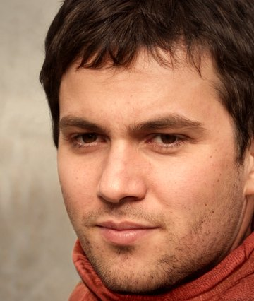

Семь ресторанов домашней кухни в Москве. Утка с яблоками, «Наполеон» по семейному рецепту и десерты без сахара для тех, кому нельзя сладкого.
Забронировать столВсё началось в 1998 году на Садовой. Виктор Громов открыл небольшой ресторан, где кормили так, как кормят дома. Сегодня «Громов и сыновья» — семь ресторанов по всей Москве и одна большая семья.
+7 295 911-60-60
+7 295 911-60-61
+7 295 911-60-62
+7 295 911-60-63

Ирина, подруга семьи · вчера
Были на юбилее Виктора Сергеевича, всё было прекрасно, светлая ему память. Одно запомнилось: попросила у шефа попробовать её знаменитый мусс без сахара — она прямо отрезала: «Нельзя, это только для Виктора Сергеевича». А после десерта отпустила всех поваров и одна мыла посуду до ночи. Вот это преданность.
Пётр Ильич · месяц назад
Хожу на Садовую с девяностых. Тут раньше было кафе «У Лебедевых», пирожки там пекли — не чета нынешним. Хозяин был душевный, жаль, прогорел. Сейчас дорого, но утка хорошая.
Анна · 2 месяца назад
Лучший «Наполеон» в Москве. Отдельное спасибо за десерты без сахара — у мамы диабет, впервые за много лет поела сладкое в ресторане.